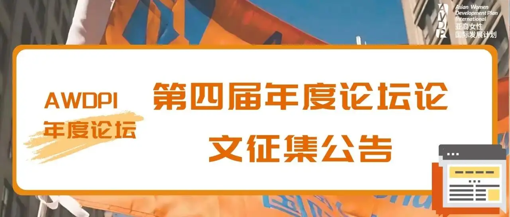

AWDPI年度论坛
AWDPI（Asian Women Development Plan International）亚裔女性国际发展计划发起于2020年全球新冠疫情爆发初期，是一个成长中的国际公益组织，致力于消除针对海外亚裔女性的歧视和性别暴力，促进她们的赋能和发展。AWDPI为面临家暴威胁的海外华人女性建立一个广泛有效的反家暴救助网络，并通过与联合国系统组织、政府相关部门、国际组织、跨国公司和学术机构建立广泛的合作，促进全社会对亚裔女性的关注。其中，AWDPI亚裔女性国际发展论坛与Avoice海外华人女性保护项目（Against Violence to Overseas Chinese Women Program）为我们的主要项目。经过五年多的发展，项目已覆盖至东亚、欧洲、北美和澳洲。
为了对过去三届论坛的努力进行总结，对未来的发展做出更好的规划，AWDPI计划举办第四届年度论坛——2025AWDPI亚裔女性国际发展论坛，此公告为【论文评议】部分的论文与研究投稿招募。
关于AWDPI亚裔女性国际发展论坛的更多详细信息，请您对我们的公众号保持关注，我们将会陆续向您介绍我们精彩的论坛议程与令人期待的重量级嘉宾！
论文与研究招募
1
举办论文评议的目的
展现AWDPI学术水平与能力；
为AWDPI成员搭建参与学术交流的桥梁；
促进跨学科交流，与更多不同领域学者共筑学术网络。
2
论文评议流程
专题论文评议与展示：AWDPI亚裔女性国际发展论坛将专设2-2.5小时进行相关主题论文的评议与展示；
精选论文讲解与点评：我们会在投稿中选出质量优秀的4-6篇投稿，每篇请大家做8分钟的讲解展示，邀请专业老师做10分钟左右点评和建议；
海报展示与交流：论坛结束后，我们将设在线海报展示专栏,将高质量投稿摘要制作成在线海报（poster），在我们的社媒账体上发布。所有投稿者将有机会与来自世界各地的学者进行沟通与讨论，共同探索学术新知。
3
论文征稿对象
本次论文征稿开放给：
AWDPI现任活跃成员
AWDPI储备库及历届成员
经AWDPI成员介绍的有参与意愿的朋友
对本次论坛主题有强烈兴趣或想法的社会各界人士和学生
4
论文征稿主题
任何与AWDPI涉足或计划涉足的领域相关的主题，包括但不限于：
反性别暴力运动
海外亚裔女性保护
虚拟空间无暴力倡议
女性领导力
女性与健康
女性与经济
女性与亲密关系
女性与媒体形象
女性政治赋权与职场赋权
女性与科技创新
女性与环境保护、文化遗产保护
海外华人女性劳工
学科背景不限，我们尤其鼓励跨学科研究的投稿和参与，如：
科技+公益（女性网站论坛对公共领域构建支持与现状……等）
政策+女性健康（医疗和社会保障视角下的女性健康……等）
职场+教育（海外华人女性职场胜任力培养……等）
法律+心理（暴露于家庭暴力环境中的儿童心理创伤与成年后犯罪概率……等）
论文主题与内容与AWDPI愿景“为女性创造爱与平等的世界”和价值观“参与、包容、赋能”相符
5
论文评议老师
我们将邀请AWDPI专家库里的嘉宾以及社会上关注女性权益领域的知名老师为大家进行论文评议
6
论文与研究评选条件
中英文不限；其他语言请单独联系学术处咨询：[email protected]
立意明确，主题鲜明，论据充分，条理清晰，语言精炼
符合文体规范，内容包括标题、作者姓名、内容摘要、关键词、正文、参考文献等部分
建议中文不超过15000字，英文不超过8000词
论文要体现原创性，不得抄袭，不得侵犯他人的合法权益
不接受已公开发表的论文投稿
本次会议鼓励对会议主题有强烈兴趣或想法、尤其是暂未参与过正式学术论坛的作者积极参与，欢迎实验研究、文献综述、系统综述、元分析等各类投稿，促进学术交流与繁荣；我们也欢迎暂时没有完整研究成果的同学提交和分享高质量的研究计划、正在进行中的研究、学期作业或小论文
7
投稿途径与截止日期
请通过以下链接进行投稿：
https://awdp-intl.feishu.cn/share/base/form/shrcnyw5HmK37YNxWHB6T3Gl8Xd
或扫描下方二维码进行投稿：
优先截止日期：北京时间2025年10月17日23:59（在此之前投稿均会被审阅）
最终截止日期：北京时间2025年10月24日23:59（在优先截止日期后，在此之前投稿，会根据评议老师的时间安排审阅，不能保证一定会被审阅 ）
投稿通告将于北京时间2025年10月24日23:59关闭；投稿结果会通过您在投稿表单中填写的邮件告知。
论坛与论文评议观众参与途径
本次论坛的所有环节都会以线上会议的形式开放给公众参与，论文评议场次暂定于北京时间2025年11月1日进行。请关注本微信公众号的后续推文，获取参与渠道和参与方式，我们十分期待您的加入！
撰稿｜钱思宇
排版&封面｜池一诺